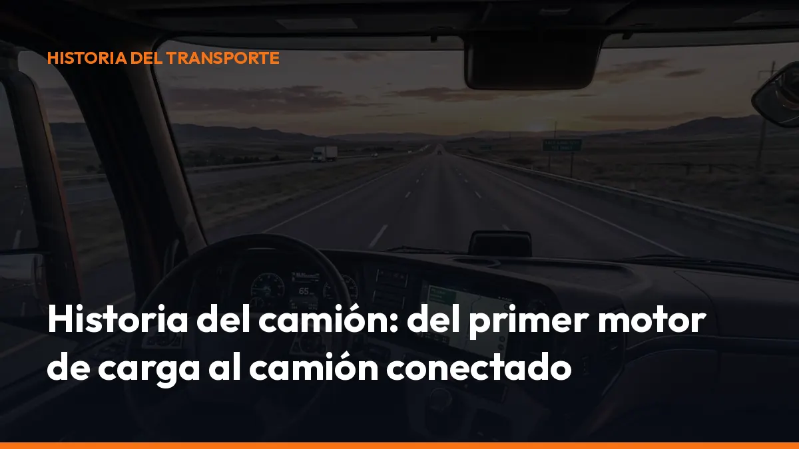

Historia del camión: del primer motor de carga al camión conectado

Sin embargo, desde su origen resolvió el mismo problema que sigue siendo esencial en el transporte: mover mercancías de forma más rápida, flexible y eficiente.
La historia del camión es también la historia de la evolución del oficio del transportista. Cada avance redujo tiempos, aumentó la carga útil y mejoró el control sobre la ruta.
Este es el recorrido desde el origen del camión hasta el vehículo conectado y eléctrico actual.
Del carro de animales al primer vehículo de carga autopropulsado
Durante siglos, el transporte de mercancías dependió de carros tirados por caballos, bueyes u otros animales. La capacidad estaba limitada por la fuerza disponible, el estado del camino y la distancia que podía cubrirse cada jornada.
El primer gran cambio llegó con el vapor.
En 1769, el ingeniero francés Nicolas-Joseph Cugnot construyó el Fardier à vapeur, un vehículo autopropulsado pensado para transportar piezas de artillería. Era pesado, lento y difícil de manejar, pero introdujo una idea decisiva: una máquina podía mover carga sin depender de animales.
Aún no era un camión moderno. Pero sí fue uno de sus antecesores directos.
1881: aparece el primer semirremolque
Antes incluso de la expansión del motor de combustión, el concepto de conjunto articulado ya empezaba a tomar forma. En 1881, De Dion-Bouton desarrolló un semirremolque remolcado por un tractor de vapor. Esta solución anticipó una de las configuraciones más importantes de la historia del transporte:
- Tractor: aporta la tracción.
- Semirremolque: transporta la mercancía.
- Acoplamiento: permite cambiar de caja o unidad de carga con mayor flexibilidad.
La consecuencia práctica fue clara: el vehículo podía adaptarse mejor a diferentes tipos de mercancía y operaciones.
1895-1896: el origen del camión moderno
El verdadero salto llegó con el motor de combustión interna.
En 1895, Karl Benz presentó un vehículo de carga equipado con motor de combustión. Un año después, en 1896, Gottlieb Daimler construyó el que suele considerarse el primer camión comercial moderno: el Daimler Motor-Lastwagen.
Sus cifras parecen pequeñas frente a los vehículos actuales:
- Motor: bicilíndrico Phoenix.
- Potencia: aproximadamente 4 CV.
- Carga útil: 1.500 kg.
- Velocidad máxima: alrededor de 12 km/h.
El motor estaba instalado en la parte trasera y transmitía la potencia al eje mediante una correa. Según la historia corporativa de Daimler Truck, una de estas primeras unidades llegó a Londres.
Consulta la historia oficial del primer camión de Daimler Truck para conocer los detalles técnicos de este hito.
Aquel vehículo cambió el oficio porque permitió transportar mercancías sin depender de la tracción animal. También obligó a crear nuevas rutinas: mantenimiento del motor, abastecimiento de combustible, reparación de averías y planificación de rutas.
El transportista dejó de ser únicamente conductor de animales y pasó a convertirse en operador de una máquina industrial.
La Primera Guerra Mundial acelera la evolución
La Primera Guerra Mundial impulsó el desarrollo de los vehículos pesados. Los ejércitos necesitaban mover alimentos, munición, combustible, piezas y personal de forma constante.
El camión demostró entonces una ventaja decisiva: podía mantener un flujo de suministro más regular que los carros tradicionales y era menos dependiente de la disponibilidad de animales. La guerra aceleró varios avances:
- Mayor resistencia: bastidores y suspensiones preparados para cargas más exigentes.
- Más autonomía: depósitos y motores mejorados.
- Estandarización: piezas y configuraciones más uniformes.
- Capacidad logística: transporte de grandes volúmenes entre almacenes, fábricas y frentes.
En 1915, MAN montó un motor diésel en un camión. Ese paso fue determinante. El diésel ofrecía un consumo más eficiente y un elevado par motor a bajas revoluciones, dos características especialmente útiles para mover grandes pesos.
Con el tiempo, el motor diésel se convirtió en el estándar del transporte pesado.
El motor diésel convierte el camión en una herramienta profesional
Durante las décadas siguientes, el camión dejó de ser una solución experimental y pasó a integrarse en la economía industrial.
El diésel permitió transportar más carga durante más kilómetros. También mejoró la productividad en rutas regionales y de larga distancia.
Para el transportista, el cambio fue directo:
- Más carga por viaje.
- Menos dependencia de paradas frecuentes.
- Mayor regularidad en las entregas.
- Posibilidad de trabajar con rutas más largas.
- Menor coste operativo por tonelada transportada.
La fiabilidad del motor empezó a ser tan importante como la capacidad de carga. Una avería podía detener una entrega, retrasar una cadena de producción y generar pérdidas para varias empresas.
Los años 50 y 60: carreteras, semirremolques y cadena de frío
Después de la Segunda Guerra Mundial, la expansión industrial y la construcción de nuevas carreteras transformaron el transporte por carretera.
Durante las décadas de 1950 y 1960, el conjunto tractor-semiremolque se consolidó como una de las soluciones principales para mover mercancías. La razón era práctica: ofrecía capacidad, flexibilidad y rapidez en las operaciones de carga y descarga.
El desarrollo de los semirremolques también permitió especializar el transporte:
- Lonas: mercancía general.
- Cajas cerradas: productos protegidos de la intemperie.
- Cisternas: líquidos y productos a granel.
- Plataformas: maquinaria y cargas especiales.
- Frigoríficos: alimentos y mercancías sensibles a la temperatura.
La cadena de frío cambió especialmente la distribución alimentaria. Los productos podían recorrer distancias mayores manteniendo unas condiciones controladas.
Para el transportista, esto supuso nuevas responsabilidades: controlar la temperatura, respetar los tiempos de entrega, revisar los equipos frigoríficos y conservar evidencias de la operación.
El camión ya no solo transportaba una mercancía. En muchos casos, debía garantizar también sus condiciones de conservación.
La electrónica entra en la cabina
A partir de los años 70 y 80, la electrónica empezó a incorporarse progresivamente al camión. Los sistemas de gestión del motor permitieron mejorar el consumo y controlar con mayor precisión el funcionamiento del vehículo. Después llegaron los frenos electrónicos, los sistemas de diagnóstico y las ayudas a la conducción.
El oficio volvió a cambiar. El transportista necesitaba conocer no solo la mecánica, sino también los avisos electrónicos, los códigos de avería y los sistemas de seguridad.
La cabina se convirtió en un centro de información.
También se extendió el tacógrafo como herramienta para registrar la velocidad, los tiempos de conducción, las pausas y los descansos. Más adelante, el tacógrafo digital sustituyó los discos de papel por registros electrónicos y tarjetas de conductor.
Desde 2006, los vehículos nuevos sujetos a la normativa europea comenzaron a incorporar tacógrafo digital. Hoy, además, el tacógrafo inteligente permite un control más preciso de las operaciones internacionales.
La Comisión Europea explica la normativa y la evolución del tacógrafo.
Del GPS al camión conectado
Durante los años 90 y 2000, el GPS y las telecomunicaciones cambiaron la gestión de las flotas.
Antes, la empresa dependía principalmente de llamadas telefónicas. Ahora puede conocer la posición del vehículo, consultar el estado de la ruta y recibir información operativa casi al instante.
El camión conectado integra cada vez más funciones:
- Geolocalización: sabes dónde está el vehículo.
- Telemática: recibes datos de consumo y conducción.
- Mantenimiento predictivo: detectas posibles problemas antes de una avería.
- Gestión de flotas: coordinas vehículos, cargas y entregas.
- Comunicación en tiempo real: reduces llamadas y esperas.
- Integración documental: relacionas la mercancía con sus justificantes.
Este cambio es especialmente importante para autónomos y pequeñas empresas. La conectividad permite trabajar con mayor control sin montar una estructura administrativa compleja.
El camión eléctrico abre la siguiente etapa
Los primeros vehículos eléctricos de carga aparecieron hace más de un siglo, pero sus baterías tenían poca autonomía y una capacidad limitada. Por eso, el motor diésel dominó el transporte pesado durante décadas.
La situación empezó a cambiar a partir de la década de 2010. La mejora de las baterías, las restricciones de emisiones y la necesidad de reducir el ruido urbano impulsaron el regreso del camión eléctrico.
Actualmente, los camiones eléctricos avanzan especialmente en:
- Distribución urbana.
- Repartos regionales.
- Operaciones nocturnas.
- Servicios municipales.
- Rutas con regreso a una base fija.
El reto principal está en combinar autonomía, carga útil, precio e infraestructura. Según los análisis publicados por ACEA sobre infraestructura de recarga, Europa necesitará una red amplia de puntos de recarga para camiones durante esta década.
El camión eléctrico no representa únicamente un cambio de motor. También exige planificar las paradas, gestionar la energía y adaptar las rutas con datos precisos.
El siguiente salto: digitalizar la documentación del transporte
La evolución del camión siempre ha seguido una misma dirección: más capacidad, más control y menos tiempo perdido.
Primero llegó el motor. Después, el diésel, el semirremolque, la cadena de frío, la electrónica, el GPS y la conectividad.
Ahora toca digitalizar completamente la documentación.
Con una solución como Mi Carga, puedes crear y gestionar documentación digital para el transporte de mercancías desde el móvil, la cabina o la oficina.
Así reduces el uso de papel, evitas errores de transcripción y tienes la información disponible cuando la necesitas: en la ruta, durante una entrega o ante un control.
El camión conectado ya está aquí. La documentación digital también. Empieza ahora desde la página de suscripción de Mi Carga o solicita tu presupuesto. El siguiente avance del transporte no consiste solo en conducir mejor. Consiste en gestionar cada operación con más rapidez, sencillez y control.
Genera tus 10 primeros documentos gratis con Mi Carga
DeCA, carta de porte y ADR, en PDF, con QR y archivo automático en la nube.
Empezar con 10 documentos gratisArtículo informativo. Consulta siempre el caso concreto de tu operación. ¿Dudas? Escríbenos.